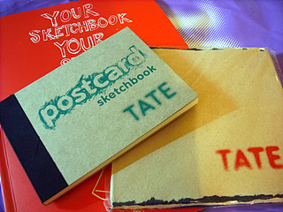
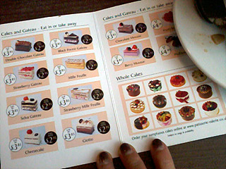
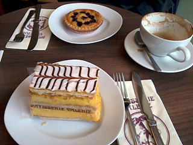
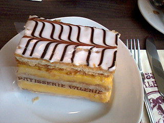
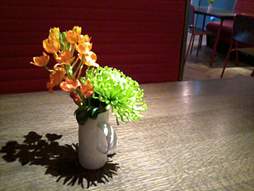
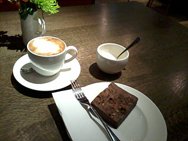
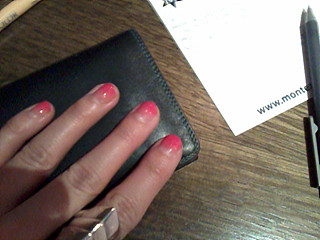
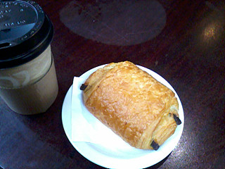
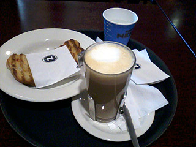

01.
3주연속으로 매일매일매일매일 비가오고있다 ㅡㅡ;;
이게 아침에 잠깐내렸다가
오후2~3시에 또 잠깐 비오고
다시 해나고 이런패턴의 무한반복이라
사실 출퇴근시간에 우산쓸 확률은 낮은데
아침에 인나면 춥고 어둡고 늘어지고해서
출근시간이 점점 늦어지고 있다 ㅡㅡ;;;;
7시20분에 알람맞춰놓고 그래도 양심상 40분에는 일어났는데
이번주는 죄다 8시~8시15분 기상..........OTL
진짜 몬일어나겠어 ;ㅂ;
그리고 이게 나만그런게 아닌지 전반적으로 다들
회사오는시간이 늦다 ㅋㅋㅋㅋㅋㅋㅋㅋㅋㅋㅋ
토요일은 Demien Hirst보러 테이트로
그리고 이날 이번주 내리 그랬듯이
또 잠깐 부슬비 내리고 해나겠지 싶어
항상 들고다니던 튼실한 장우산대신 완전쪼매난 우산을 들고나갔는데
죙일 비오고 바람도 엄청났음 ㅡㅡ;;;;;;;;;
우산 다 뒤집어지고........OTL 흑흑
그 비속을 뚫고 테이트에 간게 오후4시쯤
그리고 안내원이 하는말이 지금 티켓구입하면
저녁8시반에 입장가능하단다.............OTL
가뿐하게 포기하고 샵들려서 스케치북이랑 책만사고 돌아왔음;;;;

수채화용지랑 엽서용 :)
02.
케키는 정말 꾸준히 먹고있다 ㅋㅋㅋㅋ
가끔 이게 주식같음 ㅡㅡ;;;;


Patisserie Valerie
여기 케키 좋아함//ㅂ//
이날 둘다 주목적이 케이크여서
메인하나 주문해서 반 나눠먹고
각각 케이크하나씩 시켰다 ㅋㅋㅋㅋㅋㅋㅋㅋ
나능 Mille-Feuille

크림이 진짜 꾸닥꾸닥한게 맛난다 XD


집에서 걸어갈수있는 거리였음
완전 단골이되었을 round house에 있는 카페 ;ㅂ;
카푸치노랑 쪼코브라우니
여기 테이블이 정말 혼자와서 책보고 낙서하고 그러기 딱좋은데에 ;ㅂ;

오랜만에 스폰지로 콕콕찍어서 그라데이션 만든 기념...
이지만 핸드폰으로 찍으니 잘 안보인다 ;ㅂ;

커피랑 Pain au chocolat

이건 오늘점심
파니니랑 라떼
03. 벌써 4월이 다 지나갔다는게 믿기지가 않는다;;
4월은 내리 춥고비온기억밖에없어 ;ㅂ;
도대체 봄은 언제오는겨;; 난 봄소풍이가고싶다고 ;ㅂ;
이제 이번주 일하구 다음주 월요일은 bank holiday
그리구 화수목 로동하고 금요일부터 나는 휴가임 XD
힛힛힛 5월은 11일~20일 / 30일~6월1일 요래 day off라
요것만 기다리고있다 ^^
5월30일은 gary numan 라이브
런던공연날짜에 같이가기로한 m군 친척결혼식이 있다고해서
급변경 cambridge 공연보러간다
.......그러니 날씨좀 젭알 따듯해졌음 ;ㅂ;
일기예보는 월요일 흐림 화요일 비 수요일 비 ㅡㅡ;;;;;;;;;;